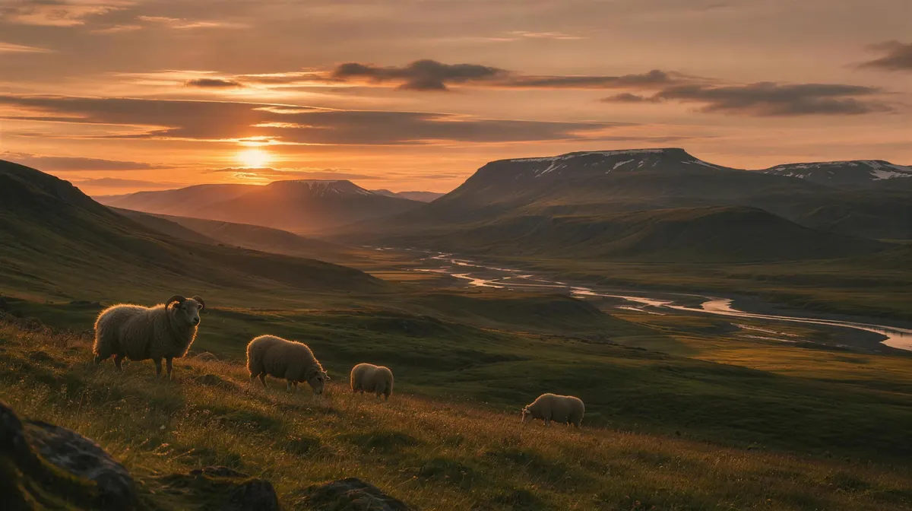
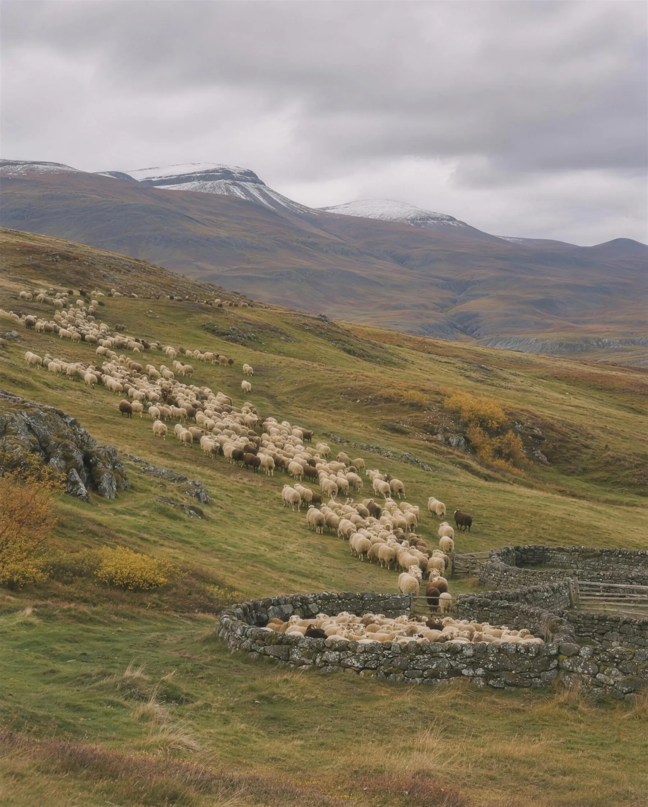
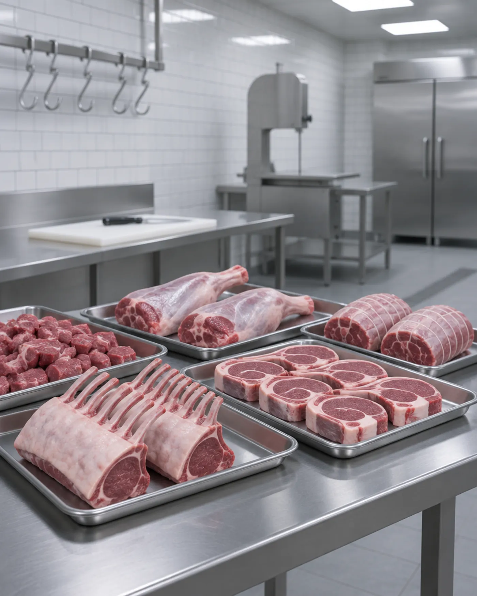
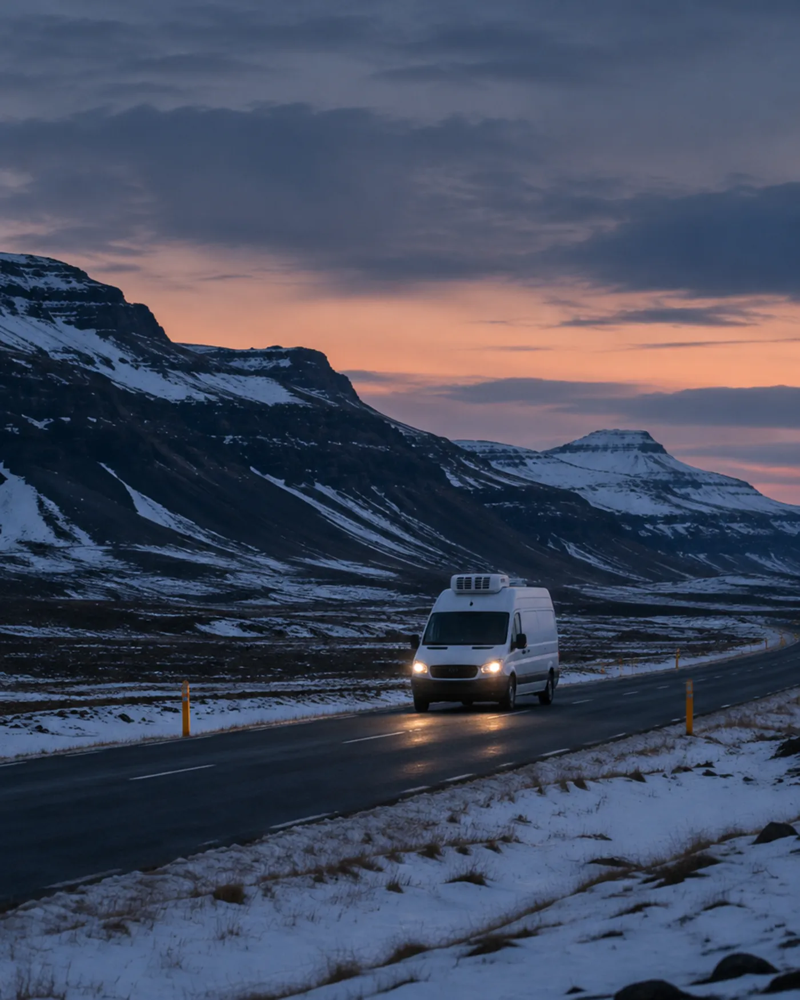

01 · Uppruni · sýnimynd
Norðurland vestra
Kjötið kemur frá Kjötafurðastöð KS á Sauðárkróki og Sláturhúsi KVH á Hvammstanga, tveimur afurðastöðvum á Norðurlandi vestra.

Kjötmarkaðurinn er kjötheildsala sem selur ferskt og frosið lamba- og nautakjöt. Kjötmarkaðurinn var stofnaður 1. mars 2012 og er á Smiðjuvegi 46 í Kópavogi.
Sýnimynd

01 · Uppruni · sýnimynd
Kjötið kemur frá Kjötafurðastöð KS á Sauðárkróki og Sláturhúsi KVH á Hvammstanga, tveimur afurðastöðvum á Norðurlandi vestra.

02 · Vinnsla · sýnimynd
Allt kjöt sem Kjötmarkaðurinn selur er fyrsta flokks. Lögð er áhersla á vönduð vinnubrögð og sveigjanlega þjónustu fyrir hvern viðskiptavin.

03 · Lager
Lagerinn er á Smiðjuvegi 46, gul gata, í Kópavogi. Opið alla daga frá 7 til 16.

04 · Afhending · sýnimynd
Allt kjöt er keyrt til kaupenda hvert á land sem er, hvort sem pöntunin er einn kassi eða heill bíll.
Kjötmarkaðurinn er kjötheildsala sem selur ferskt og frosið lamba- og nautakjöt frá Kjötafurðastöð KS á Sauðárkróki og Sláturhúsi KVH á Hvammstanga. Allt kjöt sem Kjötmarkaðurinn selur er fyrsta flokks og er keyrt til kaupenda hvert á land sem er.
Allt kjöt er keyrt til kaupenda hvert á land sem er.
Hvort tveggja. Kjötmarkaðurinn selur bæði ferskt og frosið lamba- og nautakjöt.
Frá Kjötafurðastöð KS á Sauðárkróki og Sláturhúsi KVH á Hvammstanga.
Settu saman pöntunarlista á vefnum, hringdu í 555-3567 eða í farsíma 691-4567, eða sendu póst á gummig@kjotmarkadurinn.is.
Alla daga frá 7:00 til 16:00, á Smiðjuvegi 46, gul gata, 200 Kópavogi.